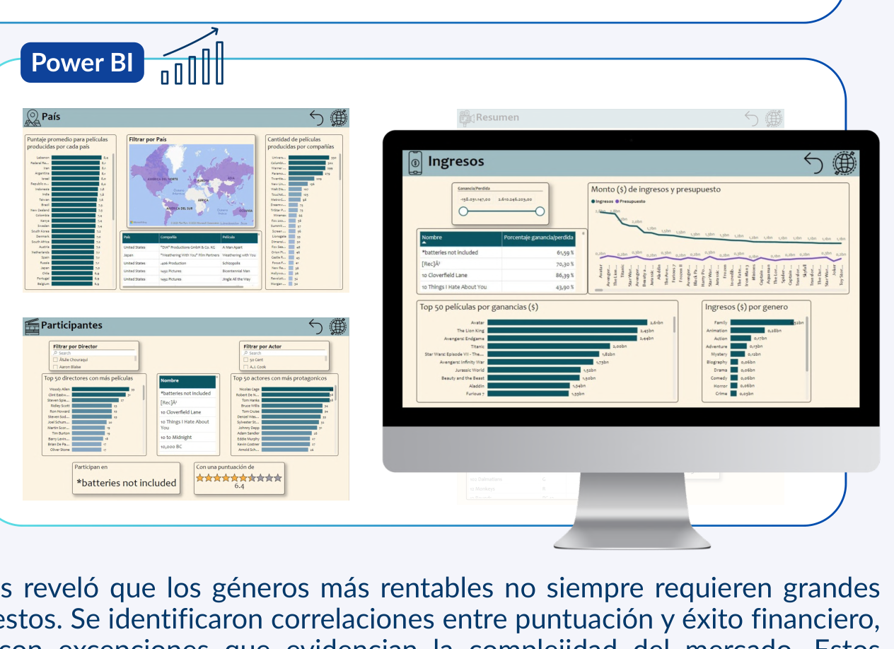

Business IntelligenceIndustria cinematográfica · Dashboard Power BI
Análisis de películas de 1980 a 2020 para explorar géneros, presupuesto, calificaciones e ingresos, utilizando un modelo relacional y medidas DAX.
Power BIDAXModelado relacional